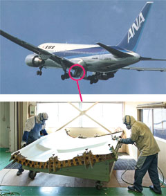
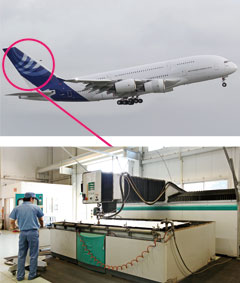
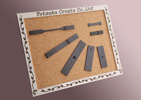
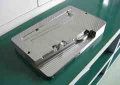
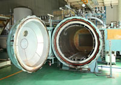
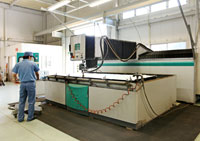
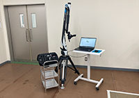
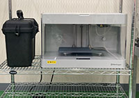

栃木県上三川町 ／ 創業 1962年
旅客機に載る複合材を、
設計図から硬化まで。
株式会社テツカクリエートは、航空宇宙向けの複合材部品をつくっている会社です。 CFRP・GFRP・KFRP のプリプレグ積層からオートクレーブ硬化、 ウォータージェットでの外形切断までを自社で行います。 SUBARU 航空宇宙カンパニー、JAXA、KEK などと取引があり、 航空宇宙分野の品質規格 JIS Q 9100 認証工場です。
- オートクレーブ最大内寸
- ∅2500×5000mm
- ウォータージェット最大
- 2000×4000mm
- 3Dスキャナ精度
- 0.026mm
- 航空機部品の生産開始
- 1970年
つくり方
材料の状態から完成品まで、6つの工程を社内で通します。 途中で他社に預ける工程がないので、日程も品質も自社で握れます。
-
プリプレグ
炭素繊維などにあらかじめ樹脂を含ませたシート材を、冷凍庫 （−18℃以下）で保管します。材料の管理そのものが品質の起点です。
-
レイアップ
専用のレイアップ室（本社に275㎡・150㎡の2室）で、 プリプレグを型に沿って手作業で積層します。繊維の向きが部品の強度を決めます。
-
バギング
積層したものをフィルムで密閉し、内部の空気を抜きます。 気泡が残ると硬化後に強度不足の原因になるため、丁寧に行う工程です。
-
オートクレーブ硬化
圧力釜で熱と圧力をかけて樹脂を硬化させます。2基あり、 大型機は ∅2500×5000mm・最高204℃、小型機は ∅1000×1500mm・最高300℃。 いずれも最高圧力 0.98MPa です。
-
加工
硬化した部品の外形をウォータージェットで切断し、端部を仕上げます。 刃物を当てずに切るため、複合材の層を傷めずに加工できます。
-
完成・検査
寸法を確認して出荷します。計測範囲3.0m・精度0.026mm の3Dスキャナ（Hexagon）で 形状を測れるため、曲面の多い複合材パネルでも実測で保証できます。
製品
つくっている部品が機体のどこに付くのか、写真で示しています。




設備・能力
受けられる仕事の範囲は、設備の最大寸法で決まります。 判断に必要なので、能力値をそのまま載せています。
| 設備 | 台数 | メーカー | 最大能力 |
|---|---|---|---|
| オートクレーブ | 1 | 芦田製作所 | ∅2500 × 5000mm 最高204℃／0.98MPa |
| 1 | 芦田製作所 | ∅1000 × 1500mm 最高300℃／0.98MPa | |
| ウォータージェット | 1 | フロージャパン | 2000 × 4000 × 150mm |
| 1 | フロージャパン | 1800 × 3000 × 200mm | |
| 立型マシニングセンター | 1 | 牧野フライス | 600 × 1000 × 500mm |
| 1 | ヤマザキマザック | 560 × 430 × 510mm | |
| 1 | 碌々産業 | 410 × 560 × 400mm | |
| 自動裁断機 | 1 | 島精機製作所 | 1800 × 10000mm |
| 1 | 島精機製作所 | 1200 × 3600mm | |
| CFRP切断機 | 2 | 丸東精機 | 500 × 500 × 13mm |
| 立フライス盤 | 1 | 大阪機工 | 920 × 300 × 550mm |
| 1 | 大阪機工 | 720 × 260 × 530mm | |
| 両頭側面フライス盤 | 2 | 中央精機 | 140 × 300 × 300mm |
| NC両頭フライス盤 | 1 | 池田工機 | 400 × 400 × 100mm |
| 万能フライス盤 | 1 | 新潟鉄工 | 400 × 1000 × 300mm |
| 精密平面研削盤 | 1 | 岡本工作 | 400 × 600 × 500mm |
| 平面研削盤 | 2 | 岡本工作 | 500 × 200 × 300mm |
| 成形研削盤 | 1 | 黒田精工 | 150 × 400 × 100mm |
| 精密ルーター加工機 | 1 | 碌々産業 | 690 × 540 × 70mm 6頭 |
| 旋盤 | 1 | 滝沢産業 | ∅200 × 700mm |
| 3Dスキャナ | 1 | Hexagon | 計測範囲 3.0m 精度 0.026mm |
| 3Dプリンター | 1 | Markforged | 320 × 132 × 154mm |
| CAD | 1 | ダッソー・システムズ | CATIA V5 |
| 冷凍庫 | 1 | — | 6200 × 5990 × 2000mm −18℃以下 |
| 1 | 三菱重工 | 2500 × 1600 × 2100mm −18℃以下 | |
| レイアップ室 | 1 | 本社 | 275㎡ |
| 1 | 本社 | 150㎡ |
-

-

-

-

沿革
木工から始まり、スチール、非金属、特殊鋼鉄を経て複合材へ。 扱う材料が変わり続けてきた60年です。
- 1962富士重工業株式会社宇都宮製作所様内にて車両請負業務開始
- 1966有限会社手塚製作所設立（栃木県宇都宮市）
- 1970航空機部品生産開始
- 1986金型用入れ子の生産開始／石橋工場稼働
- 1987旅客機用複合材部品の生産開始
- 1991株式会社テツカクリエートに組織変更
- 1992CFRP試験研究用テストピースの生産開始
- 1995オートクレーブ導入（石橋工場）
- 2001ウォータージェット導入（2007年9月に本社・工場へ移設）
- 2006品質マネジメントシステム JIS Q 9100:2004（ISO9001）認証取得／本社・工場を現在地に移転、ウォータージェット増設
- 2008環境マネジメントシステム エコアクション21認証取得（本社・工場）／宇宙航空研究開発機構（JAXA）と取引開始
- 2011エコアクション21：2009変更認証取得／高エネルギー加速器研究機構（KEK）と取引開始／JIS Q 9100:2009 変更認証取得
- 2012エコアクション21：2009拡大認証取得（石橋工場）
- 2016エコアクション21：2009拡大認証取得（江曽島工場）／創立50周年
- 2017本社敷地内に上三川第二工場竣工
会社概要
- 商号
- 株式会社テツカクリエート
- 創業
- 1962年8月25日
- 資本金
- 1,000万円
- 役員
- 代表取締役 社長 鉢村 高史
- 社員
- 40名（2025年現在）
- 本社・工場
- 栃木県河内郡上三川町大字多功2571-2
敷地面積 4,700㎡ - 石橋工場
- 栃木県下野市下古山2951-2
敷地面積 1,096㎡ - 事業内容
-
航空宇宙関連部品加工
ウォータージェットによる特殊材料の加工 - 認証
-
JIS Q 9100（航空宇宙 品質マネジメントシステム）
エコアクション21（環境マネジメントシステム） - 取引銀行
-
群馬銀行 宇都宮支店／足利銀行 江曽島支店／
日本政策金融公庫 宇都宮支店
よくあるご質問
どのくらいの大きさまで成形できますか？
オートクレーブは2基あり、大きい方が直径2500mm×長さ5000mm（最高温度204℃・最高圧力0.98MPa）、 小さい方が直径1000mm×長さ1500mm（最高温度300℃・最高圧力0.98MPa）です。 ウォータージェットは最大2000mm×4000mm×150mmまで加工できます。
CFRP以外の材料も扱えますか？
GFRP・CFRP・KFRPの接着加工に対応しています。もともとは木工加工から始まり、 スチール、非金属、特殊鋼鉄を経て複合材料へと扱う材料を広げてきました。 金属の機械加工や六面精密研磨加工も継続して行っています。
航空宇宙以外の仕事も受けていますか？
はい。プラスチック金型用入駒加工、ウォータージェットによる特殊材料の加工、 精密機器加工・製缶加工も承っています。難切削材料のウォータージェット加工に ついてはご相談ください。
品質・環境の認証は取得していますか？
航空宇宙分野の品質マネジメントシステム規格 JIS Q 9100 を2006年に取得し、 以降更新しています。環境マネジメントシステムのエコアクション21も2008年に 本社・工場で取得し、石橋工場・江曽島工場へ拡大認証しています。
設計データはどの形式に対応していますか？
CATIA V5 を導入しています。あわせて計測範囲3.0m・精度0.026mmの3Dスキャナ （Hexagon）と3Dプリンター（Markforged）を保有しており、形状の計測と試作にも 対応できます。
お問い合わせ
各種製品等のご質問など、お気軽にお問い合わせください。 難切削材料のウォータージェット加工のご相談も承ります。